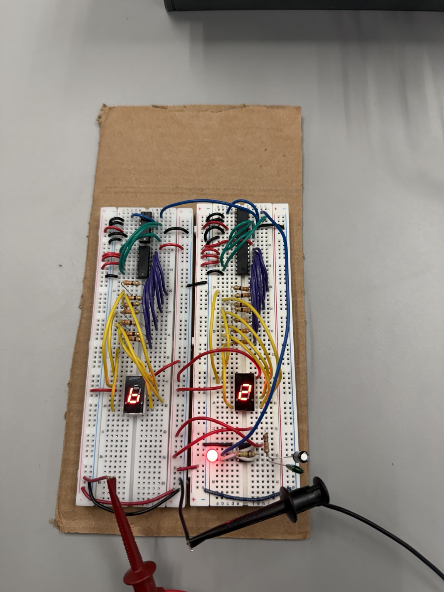

Circuit Design
Assembled and troubleshot the 555-timer clock, cascaded BCD counters and seven-segment decoder circuits on breadboards.
ACADEMIC PROJECT · DIGITAL ELECTRONICS
Constructing and testing a breadboard-based 00–99 counter with a 555 timer, cascaded BCD counters, decoder/drivers, and seven-segment displays.

01 / OVERVIEW
Following laboratory schematics, I constructed a single-digit 0–9 counter and expanded it to a two-digit 00–99 counter. The system uses a 555 timer to generate clock pulses, two 74LS90 BCD counters, two 74LS47 decoder/drivers, and two seven-segment displays.
02 / TESTING
Before wiring the timer to the counter and decoder, we connected an LED to the 555 timer output to confirm that it generated regular pulses at a visible rate. We then tested the single-digit counter and added the second counter stage so the tens display advanced after each complete units cycle.
03 / CHALLENGE
During the first experiment, incorrect connections between the counter outputs and decoder pins caused incomplete or incorrect digits. We compared the wiring with the laboratory schematic, corrected the affected connections, and verified the expected display sequence.
04 / DEMONSTRATION
SKILLS IN PRACTICE
Here is how the tools and techniques from my Technical Skills section were applied to this project.
Assembled and troubleshot the 555-timer clock, cascaded BCD counters and seven-segment decoder circuits on breadboards.